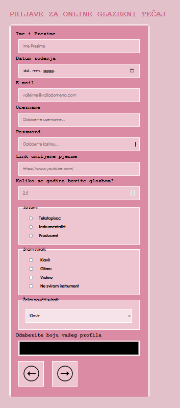

| Tablica vježbi | ||||
|---|---|---|---|---|
| 1. | prva vježba | |||
| 1.1 | ||||
| 2. | druga vježba | |||
| 2.1 | ||||
| 3. | treća vježba | |||
| 3.1 |  | |||
HTML je kratica za HyperText Markup Language, što znači prezentacijski jezik za izradu web stranica. Hipertekst dokument stvara se pomoću HTML jezika. HTML jezikom oblikuje se sadržaj i stvaraju se hiperveze hipertekst dokumenta. HTML je jednostavan za uporabu i lako se uči, što je jedan od razloga njegove opće prihvaćenosti i popularnosti. Svoju raširenost zahvaljuje jednostavnosti i tome što je od početka bio zamišljen kao besplatan i tako dostupan svima. Prikaz hipertekst dokumenta omogućuje web preglednik. Temeljna zadaća HTML jezika jest uputiti web preglednik kako prikazati hipertekst dokument. Pri tome se nastoji da taj dokument izgleda jednako bez obzira o kojemu je web pregledniku, računalu i operacijskom sustavu riječ. HTML nije programski jezik niti su ljudi koji ga koriste programeri. Njime ne možemo izvršiti nikakvu zadaću, pa čak ni najjednostavniju operaciju zbrajanja ili oduzimanja dvaju cijelih brojeva. On služi samo za opis naših hipertekstualnih dokumenata. Html datoteke su zapravo obične tekstualne datoteke, ekstenzija im je .html ili .htm. Osnovni građevni element svake stranice su znakovi (tags) koji opisuju kako će se nešto prikazati u web pregledniku. Poveznice unutar HTML dokumenata povezuju dokumente u uređenu hijerarhijsku strukturu i time određuju način na koji posjetitelj doživljava sadržaj stranica.
Prvi javno dostupan opis HTML-a je dokument zvan HTML tags (oznake), prvi put se spominje na internetu od strane Tim Berners-Leeja krajem 1991.
Taj opis se sastoji od 20 elemenata početnog, relativno jednostavnog dizajna HTML-a. Trinaest tih elemenata još uvijek postoji u HTML4.
Postanak mnogih svojih oznaka duguje jednom od ranih jezika za formatiranje teksta, runoff-u. Runoff je razvijen u ranim 1960-im za CTSS
(Kompatibilni Time-Sharing System) operacijski sustav. Runoff je kasnije inkorporiran u UNIX operativni sustav u naprednije formatirajuće programe
kao što su roff, nroff i troff. Svaka nova verzija HTML-a je razvijana tako da ostane čitljiva na svim web preglednicima. Tim Berners-Lee je,
nakon što je u listopadu 1994. napustio CERN (Europsku organizaciju za nuklearno istraživanje),
osnovao organizaciju World Wide Web Consortium koja se bavi standardizacijom tehnologija korištenih na webu poznatija kao W3C .
Prva verzija HTML jezika objavljena je 1993. godine.
U to je vrijeme bio još poprilično ograničen,
pa nije bilo moguće čak ni dodati slike u HTML dokumente. Razvoj HTML-a nastavljen je prvom "imenovanom" verzijom – 2.0, no ni ona nije postala standardom.
HTML4 predstavljen je u prosincu 1997.,
nastavio je s prihvaćanjem oznaka nametnutih od strane proizvođača različitih web preglednika, no istovremeno
je pokrenuto i "čišćenje" standarda, proglasivši neke od njih suvišnima. Manje promjene u specifikaciji ovog standarda predstavljene su u prosincu 1999., kada je predstavljena verzija HTML4.01.
HTML5 donosi brojne nove mogućnosti koje HTML 4.01 i XHTML 1.x nisu imali, kao što je mogućnost reprodukcije videa na stranicama bez korištenja Adobe flasha iil Microsoftovog silverlighta,
mogućnost upravljanja pomoću tipkovnice i opcijama za bilo koju vrstu manipulacija, drag and drop, canvas kao i ostali novi elementi.
Izrada internet stranica završava postavljanjem html stranica na internet web server, te ispitivanjem funkcija u realnim uvjetima. Da bi one bile dostupne na Internetu, potrebno ih je smjestiti na neki web server. Web server je računalo na kojem se nalaze web stranice. Kako je pristup svakom računalu određen portovima (ulazima) koji su predstavljeni brojevima, tako je i pristup web serveru određen portom. Port za pristup web serveru je 80. Svaki server ima IP adresu, tako da kada se neka stranica posjećuje, odnosno neki server, zapravo se posjećuje adresa kao 98.34.65.243:80, gdje broj 80 govori da se radi o web serveru. Prostor na web serveru se može zakupiti kod davatelja usluga hostinga (posluživanja) stranica ili se može napraviti svoj vlastiti kućni server. Ako želimo imati vlastiti kućni server trebamo imati internetsku vezu koja je 24 sata spojena na internet, ima veliku propusnost podataka i potrebno je imati statičku ip adresu, koja se dobije uz nadoplatu kod davatelja internet usluga kao i brzina prijenosa podataka. Da bi kućni web server funkcionirao potrebno je imati instalirane zasebno Apache ( web server), PHP ( intrepetator za programski jezik, ako ga koristimo), MySQL (baze podataka) ili možemo koristeći gotove programe s cijelim paketom kao što su xampp,wamp,... Početna stranica, koju želite da posjetitelj vidi kada posjeti vaš server započinje s index.html. Nakon što smo uspješno stavili našu html stranicu na server, potrebno je nadjenuti našu ip adresu računala s domenom. Domene s hrvatskim predznakom možemo besplatno prijaviti na carnetovoj stranici na www.carnet.hr/dns. Domene .hr i .com.hr mogu besplatno registrirati na carnetovim stranicama samo pravne osobe i fizičke osobe koje obavljaju registriranu samostanu djelatnost (obrtnici, umjetnici, liječnici i sl), dok domenu .from.hr mogu besplatno registrirati sve fizičke osobe iz Republike Hrvatske.